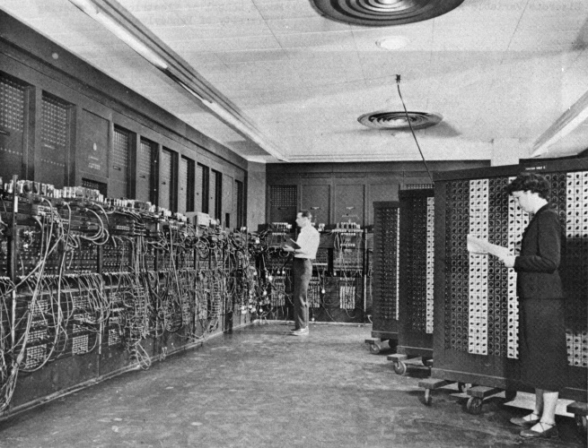

De aanzet voor de eerste elektronische computer was de tweede wereldoorlog. Gedurende het eerste deel van de oorlog richtten Duitse onderzeeërs grote vernielingen aan onder Engelse schepen. Duitse generaals zonden commando’s via radio naar de duikboten maar wat ze niet wisten was dat ze onderschept en gedecodeerd werden.
Om een gecodeerd bericht te ontcijferen was er een enorme hoeveelheid rekenwerk nodig; en wilde het rekenwerk nut hebben, dan moest het zeer snel na het onderscheppen van het bericht gebeuren.
Om de berichten te ontcijferen richtte de Engelse regering een geheim laboratorium op, genaamd Bletchley Park, dat een elektronische computer bouwde: de COLOSSUS. De beroemde wiskundige Alan Turing werkte mee aan het ontwerp van de machine. De COLOSSUS zou uiteindelijk in 1943 in bedrijf komen.

Gefascineerd door het succes van de COLOSSUS begon men in de VS met het ontwerpen en bouwen van de ENIAC (Electronic Numerical Integrator and Computer). De machine bestond uit zo’n 18000 vacuümbuizen (de voorloper van de transistor) en 1500 relais.
De ENIAC woog zo’n 30 ton, nam de ruimte van twee klaslokalen in beslag en verbruikte zo’n 140 kW.
Het programmeren van de ENIAC gebeurde door het instellen van zo’n 6000 mechanische schakelaars en het verbinden van een massa contacten met draden.
De ENIAC was de eerste General Purpose Computer, wat zoveel betekent als het feit dat deze computer kon ingezet worden voor verschillende taken. Dit had uiteraard te maken met het feit dat je deze computer kon programmeren voor het uitvoeren van diverse taken aan de hand van schakelaars.
John Von Neumann, één van de betrokkenen bij het ENIAC project, bracht al snel enkele verbeteringen aan. Hij vond het programmeren met schakelaars en kabels tijdrovend, vervelend en niet flexibel. Hij kwam op het idee om instructies en data in digitale vorm te representeren in het geheugen van de computer.